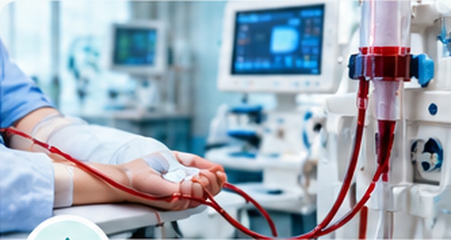
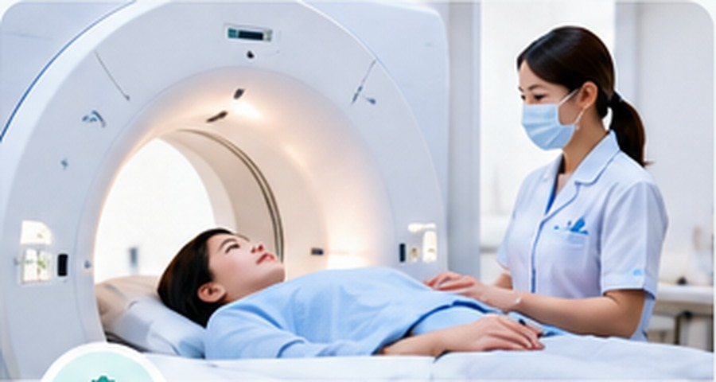

China’s National Medical Special Zone
40+ Medical Institutions
Boao Lecheng International Medical Tourism Pilot Zone in Hainan Free Trade Port is China’s only national medical special zone approved by the State Council. It hosts over 40 medical institutions, including Ruijin-Hainan Hospital, West China Lecheng Hospital, Boao Super Hospital, Ciming Boao International Hospital and other top tertiary branch hospitals and premium medical centres.
Innovative Medicine & Advanced Programmes
With exclusive national pilot policies, Lecheng introduces globally innovative medicines and devices. It offers advanced programmes: stem cell therapy, immune cell treatment, blood purification, premium comprehensive health check-ups, anti-ageing management, chronic disease intervention, regenerative medicine and integrated Chinese & Western wellness care.
Early Access & Personalised Care
Its standout feature is the special regulation for early access to internationally approved drugs and devices. Leading specialists deliver personalised full-cycle health plans. We help coordinate your medical itinerary, arrange hospital access and specialist consultations for health screening and wellness treatment, within a scenic tropical environment.
Medical, Regenerative & Wellness Care
Lecheng brings together specialist medical institutions and advanced health programmes under China’s national medical pilot policies. Programme suitability and treatment plans are determined by the treating medical team after individual assessment.
Stem Cell Therapy
Access specialist-led regenerative programmes using cellular technologies, with assessment and treatment planning coordinated through participating medical institutions.
Immune Cell Treatment
Specialist consultations for immune-cell based programmes available within the pilot zone, subject to clinical evaluation and applicable medical protocols.

Blood Purification
Coordinated access to advanced medical centres offering blood purification services as part of personalised health-management programmes.

Comprehensive Health Check-ups
Premium health screening can combine specialist consultations, diagnostic imaging, laboratory testing and personalised health review.
Anti-ageing Management
Individual wellness and healthy-ageing programmes are developed around health status, diagnostic findings and specialist recommendations.
Chronic Disease Intervention
Multidisciplinary assessment supports personalised intervention and ongoing health-management planning for chronic conditions.
Regenerative Medicine
Explore regenerative-medicine consultations and advanced programmes offered by specialist teams within Lecheng’s medical ecosystem.
Chinese & Western Wellness Care
Integrated wellness programmes can combine modern medical assessment with appropriate Chinese and Western health-management approaches.
Specialist access in a tropical environment
We help coordinate your medical itinerary, arrange hospital access and specialist consultations for health screening and wellness treatment, within a scenic tropical environment.
Planning medical care in Boao Lecheng?
Contact Tareek Al Bahar to coordinate hospital access, specialist consultations and your medical itinerary in Hainan, China.
Request Medical Consultation